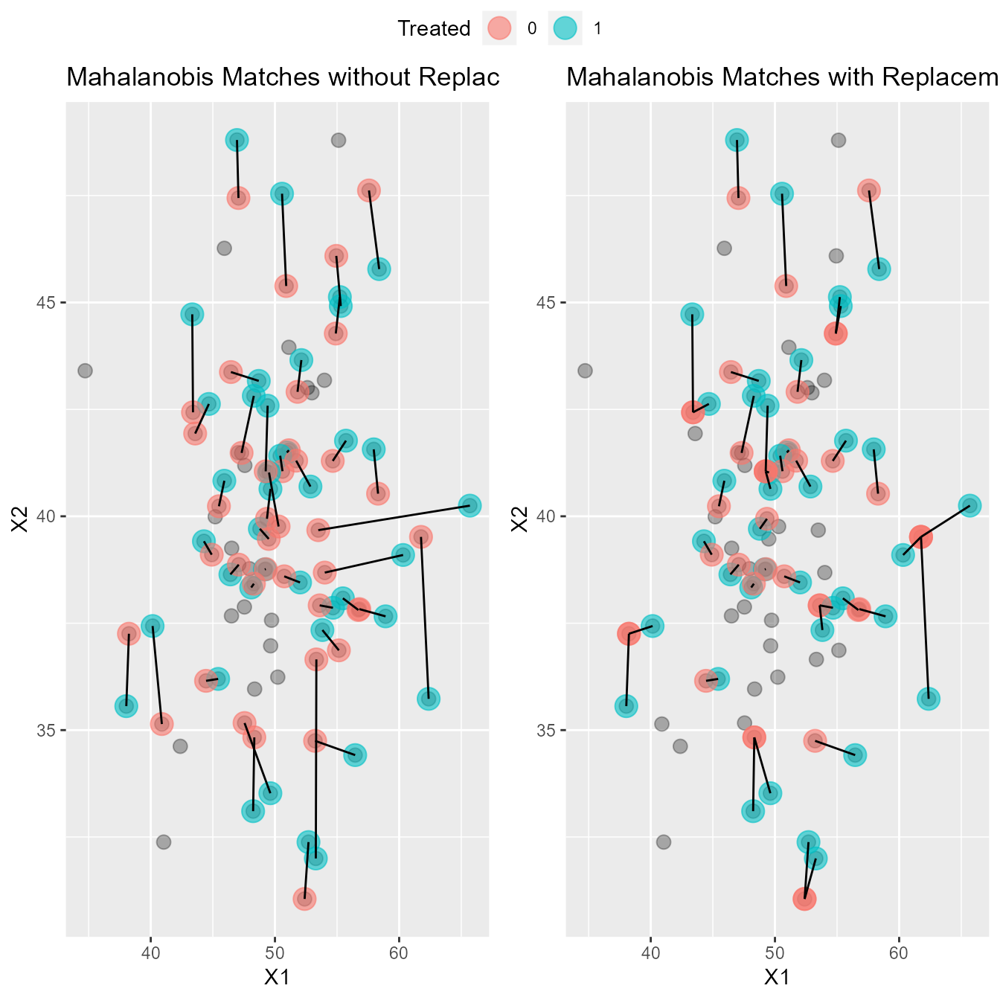
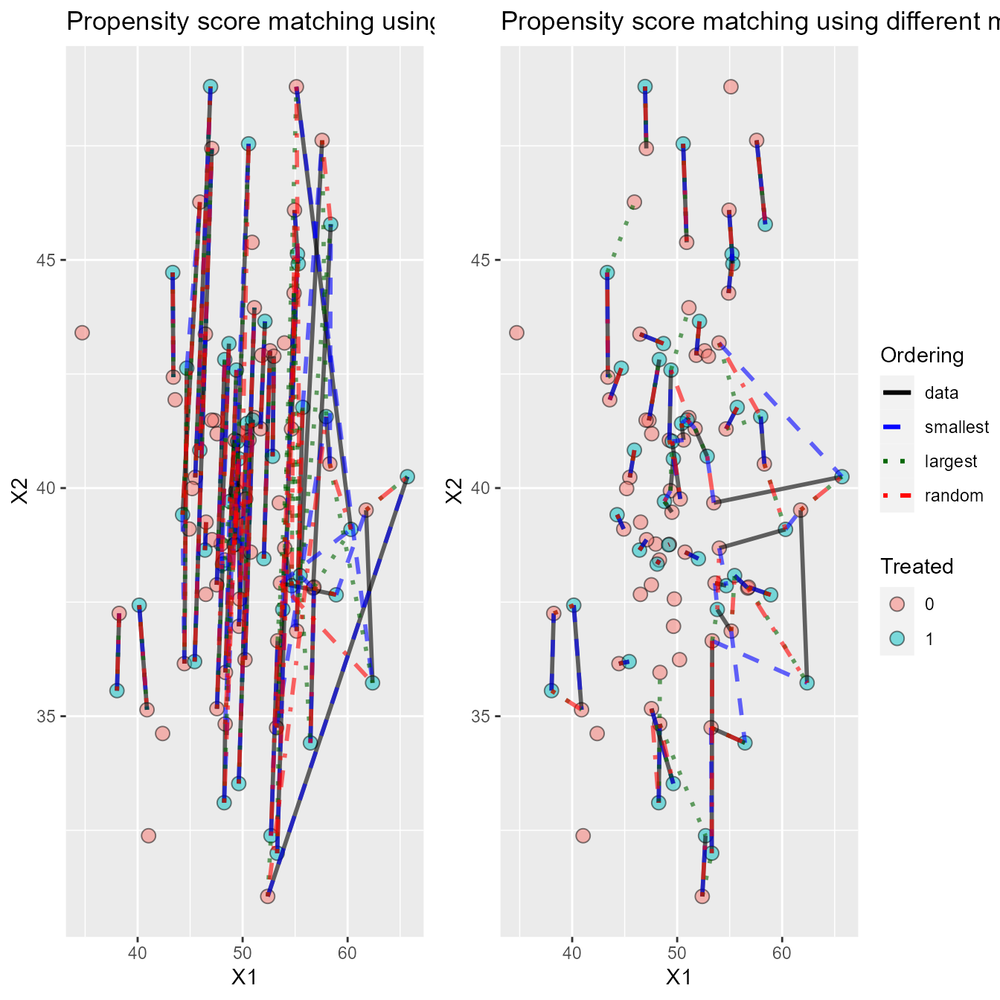
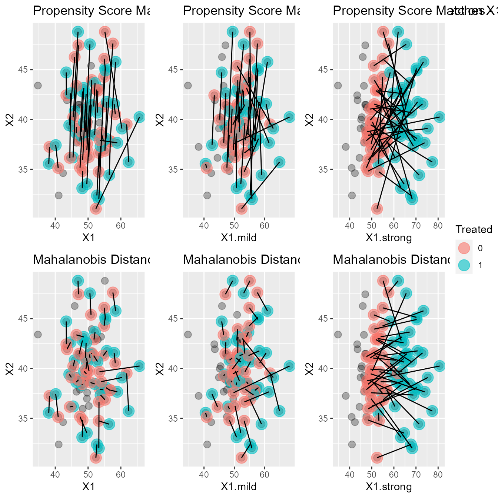
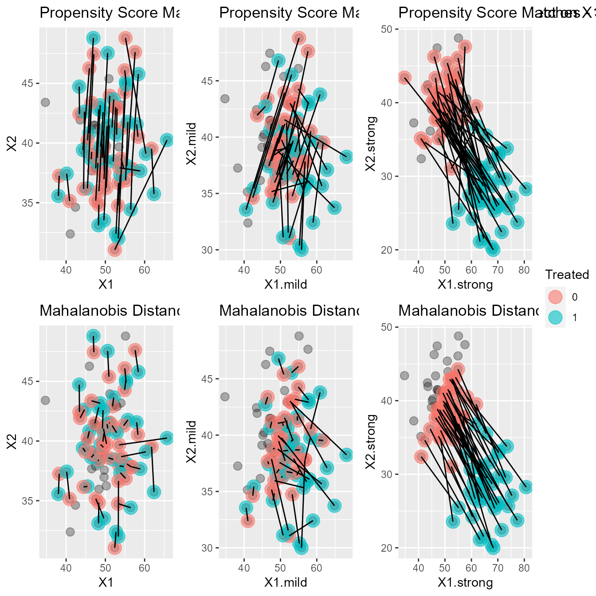
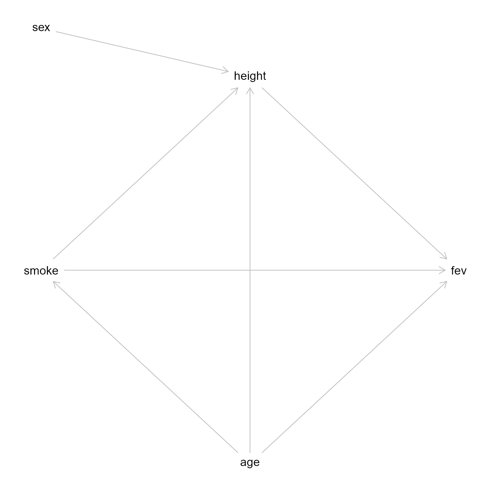
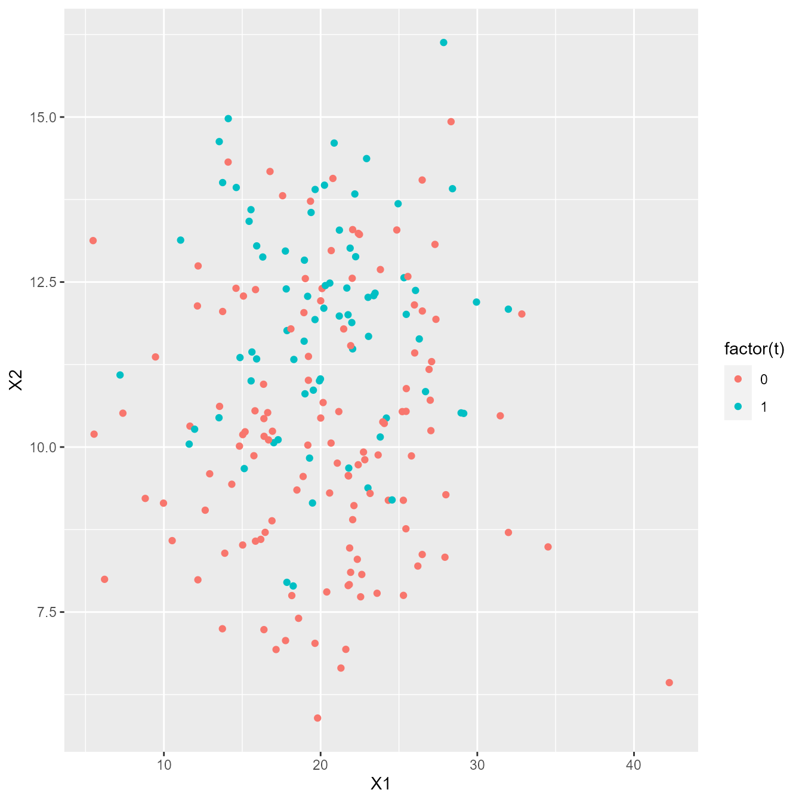

Introduction
This Shiny App package has been developed with the intention of providing educational support for understanding matching methods in the context of causal inference. The initial intention was to deal specifically with the Propensity Score Paradox highlighted by King and Neilsen[ref]. Over the development of the app we decided that the underlying theoretical concepts that inform how matching is conducted by might be more useful and engaging in an educational environment. This document outlines the theoretical concepts and development process that was undertaken to develop the app.
Matching
In observational data there is no ability to control which people receive treatment and which do not. In fact, there is often little control over the available covariates that may help inform the outcomes. This potentially exposes observational data to selection bias and confounding.
Matching is a methodology that is used in the analysis of observational data. Matching is used as a pre-processing step to assist in improving the estimate of a given causal effect on an outcome of interest. The causal variable is generally framed as a binary treatment. Matching occurs by pairing the individuals, or units, in the dataset across the treated and untreated groups. The purpose of pairing, or matching, the data is to find a hidden randomised experiment within the data. That is to say, to find data within the dataset that is free from confounding and other bias that is usually automatically accounted for in a true randomised experiment.
Essentially, when matching is conducted, a type of distance is used to see how far apart all the treated units are from all the controls. Then an iterative process takes place whereby each unit is matched to its nearest neighbour. This process can occur in an order of the analysts choosing and with or without replacement. At the end, the remaining units that are unmatched are removed and the analysis occurs on the matched data which, hopefully, is the hidden experiment you were looking for.
There are many different ways to calculate the distance between two units in a dataset. This app and vignette will focus on two commonly used distances - the propensity score and the mahalanobis distance.
Propensity Score
The propensity score is the most common way of conducting matching. It reduces a multidimensional space to a single dimension which allows for easy matching between units. It is based on theory by Rosenbaum and Rubin[ref] and relies on logistic regression to determine the probability that a unit will be treated. Mathematically, \(e(x_i) = pr(Z_i=1|x)\) where \(e(x_i)\) is the propensity score, \(Z\) is the treatment variable, \(x\) is a vector of covariates, and \(i\) represents an individual.
Many packages in R that perform matching analysis take
the leg work out of calculating the type of distance being used. When
calculating the propensity score for matching the logistic regression
formula looks like \(t \sim x_1 + x_2 + ... +
x_n\) where \(t\) is the
treatment variable and \(x\) represents
a chosen covariate to match on. Once the probabilities have been
calculated then treated units are paired with control units that have
the same or similar probability of treatment.
The propensity score is also widely used for other methods to improve estimates including weighting and stratification. While these methods are not the primary purpose of the app, their outcomes have been provided in the outputs to give some further insights into what alternative methods may demonstrate.
Mahalanobis Distance
The Mahalanobis Distance was developed by Prasanta Chandra Mahalanobis in 1936 as a means of comparing skulls based on their measurements. It’s normal application calculates how many standard deviations a point is from the mean of the specified variables and can give a good indication of outliers in a group. In matching, the application is similar but not quite the same. Instead of using the mean as a comparator, each treated unit is compared, pairwise, with each of the units in the control group.
The pairwise Mahalanobis Distance is calculated by \(D_{ij} = (X_i−X_j)W^{−1}(X_i−X_j)^T\) (https://stats.stackexchange.com/questions/65705/pairwise-mahalanobis-distances) where \(X_i\) and \(X_j\) represent the matrix of covariates for the treated and control groups and \(W^{-1}\) is the covariance matrix. Similar to the Propensity Score, the Mahalanobis Distance reduces a multidimensional space to a single value representing the distance between units. A major difference, which will soon be seen, is how the matches occur between the methods. The Mahalanobis Distance uses the raw information to calculate the distance between individual units which is in contrast to the Propensity Score which uses the probability of being treated to then determine the distance.
Other Options
Like most things in statistics, there is more than one way to skin a cat and matching is no different. As mentioned above, there are other things that you can do with the matching process to help improve the results. Three of the things that will be discussed are replacement, ordering, and caliper application.
Replacement
Replacement can be an important consideration when looking at using matching. Replacement refers to the re-use of a unit when it is the closest unit to more than one of the treated units. If we look at this visually (see Fig ) then we can see that many of the control units that were included in matching without replacement are dropped. This creates a tighter group of comparable units for the matched variables and is more likely to result in covariate balance, one of the primary aims of matching. It is also the prudent option when you have a dataset that has equal sized control and treated groups as matching without replacement will not result in pruning many units.

Ordering
The ordering of the matches is only relevant if you are matching
without replacement. If you are matching with replacement then the
nearest match will be used irrespective of what order you are using. The
MatchIt package uses the propensity score as a way of
controlling the order of the matches and data can be matched using one
of four orders - data, smallest, largest, and random.
Ordering by data is just using the data in the order it has in the
dataframe. Ordering by smallest starts with the lowest propensity score
first, or to put it another way, starts with the units that have the
lowest probability of being treated based on the supplied covariates.
Ordering by largest is the same as ordering by smallest but starting
with the highest propensity score. Ordering by random is exactly as it
sounds, the sample function is used on the number of units
to generate a random vector to order the data by.
The MatchIt package has not extended the ability to
order data to the Mahalanobis Distance (as generally the propensity
score is not used in this instance of matching) but for the purposes of
comparison we have included it in the app.

Matching Visuals
In order to demonstrate how matching works visually, we will simulate some data under different conditions to highlight the differences in the methods. This will purely show how data are matched between groups, we will look out how that changes the estimate of the treatment effect later.
All these simulations will contain 60 control units and 40 treated units and the matches will be completed with both the Propensity Score and the Mahalanobis Distance.

For the purposes of simplicity and uniformity the
optmatch package has been used to generate a distance
matrix using the match_on function. The format of the data
that is returned is the same for both the Mahalanobis Distance and the
Propensity Score. We’ll also be use the fev dataset from
the mplot package which contains a data that is useful for
demonstrating the matching process.
Let’s have a quick look at the data so we know what we’re dealing with.
#> age height sex smoke fev
#> 1 9 57.0 0 0 1.708
#> 2 8 67.5 0 0 1.724
#> 3 7 54.5 0 0 1.720
#> 4 9 53.0 1 0 1.558
#> 5 9 57.0 1 0 1.895
#> 6 8 61.0 0 0 2.336As we can see, there are 5 columns. All the data here is numeric. For
the purpose of this exercise, we want to see what the effect of smoke is
on forced expiratory volume. Therefore, we will use the
smoke variable as the treatment and fev is the
outcome. The remaining covariates are age,
height, and sex.
Let’s have a quick look at the data using ggplot2.

Fig 2

We can see from this quick look at the data that smokers are older, taller and appear to have a larger FEV. They are also a small subset of the overall population in the dataset. If we were to map out the relationships in a directed acyclic graph, it might look something like this:
Fig 3

We can see from the relationships here that age is a
confounder as it effects both the exposure (smoke) and the
outcome (fev). height is also important as it
is a mediator. sex appears to be completely accounted for
by height. Now that we have the variables for our model,
let’s look at some methods for matching.
There is more than one way of matching units in a dataset. The two methods we are looking at here are Propensity Score Matching (PSM) and Mahalanobis Distance Matching (MDM). We will also look at some of the different specifications you can make when matching.
Propensity score matching is relatively straight forward. Using
logistic regression, create a vector of probabilities based on the
whether or not each unit is likely to have received the treatment (or
been exposed to subject of interested). We will be using
smoke ~ age + height to determine our matches. For
consistency in output between methods, I have used the
optmatch package to generate the distance matrix.
If we wanted to do the same thing for MDM then we specify it as per the optmatch documentation. In terms of the differences between the distance matrices, the propensity score distance matrix is the distance (or difference) between the calculated propensity score for each unit whereas the mahalanobis distance matrix will be the actual distance between the units based on the covariance matrix of \(X\).
Now that we have a distance matrix for each method we can look at matching.
At this point we can start to specify how the matching occurs.
Options include:
- whether or not to use replacement
- the order the data is matched in (this is really only important if you
aren’t replacing matches)
- whether or not to use a calliper (and how tight to make it)
This exercise is not looking at the use of a calliper. It is also not exploring exact matching or other more complex match settings. We will be doing a simple match without replacement, ordered by the data for both methods.
Each matrix is \(m \times n\) where \(m\) represents the treatment group and \(n\) represents the control group. To get our matches, we sequentially go through each \(m\) and select the \(n\) with the smallest value until we get to the last \(m\). When do this with replacement there is no regard for whether \(n\) has been used before, without replacement mean that the same \(n\) cannot be used twice. Let’s get some matches!
#>
#> FALSE TRUE
#> 22 43OK. Now we have our matches for each method. Let’s see what they look
like visually using ggplot2.

Fig 5

We can see from these two plots that the matches between the groups
are slightly different between methods. For example, the smoker that is
age=15 and height=60 is paired with very
different non-smokers. Overall the matches look quite similar in the
distribution even though there are a few differences between them. Let’s
see if that changes the treatment effect.
There are two ways we can specify how we estimate the treatment
effect on the matched data. The purpose of the matching is to control
confounding and bias. If we are happy that has been done by virtue of
the matching then we need only specify fev ~ smoke.
Alternatively, if we wanted to cover our bases, we could include the
covariates in the model as well -
fev ~ age + height + smoke. Let’s compare them to a model
that contains all the data.
#> rmsea x2 df p.value rmsea 2.5%
#> age _||_ sex 0.0000000 7.213172 10 0.70517856 0
#> fev _||_ sex | age, hght, smok 1.0000000 12.000000 6 0.06196880 0
#> sex _||_ smok 0.1804387 5.200000 1 0.02258689 0
#> rmsea 97.5%
#> age _||_ sex 0.1340545
#> fev _||_ sex | age, hght, smok 3.2226032
#> sex _||_ smok 0.3628085The propensity score is a popular choice for matching but using it
appropriately has been a contentious topic in recent years. Let’s look
at why that might be. Below, some data has been simulated with both
X1 and X2 being mediators between
t (the treatment variable) and y (the outcome
variable). There is a large treatment effect between t and
X2 which carries on to y. We can see on the
plot below that there is complete separation between the treated and
control groups with respect to these covariates.

#> [1] ""
#> [1] y ~ t
#> t ~ y + X1